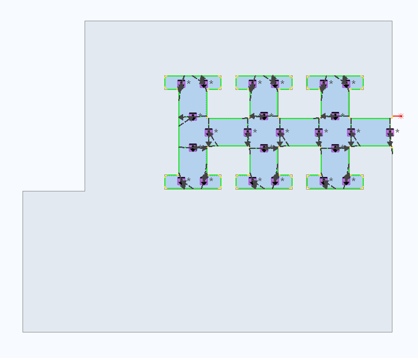

Cutting up scrap
Punching machine, punch laser machine: Cutting scrap into pieces
| Processing type | Effect |
|---|---|
Cut notch to pieces |
Notches are punched up with the active punching tool. |
Cut contour to pieces |
The inner contour is completely punched up by the active tool without the scrap having to be removed. |
|
Scrap areas on the sheet are cut up into scrap parts small enough to go through the flap. |
Cut scrap |
The inner contour is cut into small pieces using the laser. The scrap parts are disposed of via the laser die.
Open Parameters for scrap cutting: press SETTINGS The system rules variable System rules variable The system rules variable
|
Create cut on sheet parameters
| Field | Description |
|---|---|
Start of cut |
Only available for Cut sheet cut. and Mark sheet cut
|
Horizontal |
Sheet cut is horizontal. |
Vertical |
Sheet cut is vertical. |
Polygon |
Manually define whether sheet cut is horizontal or vertical. |
2D laser machine: Cutting scrap into pieces
| Cutting up scrap with the TruLaser Center 7030 (L26) differs from the procedure described in chapter Cutting up scrap TruLaser Center 7030 (L26). |
The inner contours can be cut up as scrap. With this, potential collisions with protruding parts can be avoided.
| The approach flag of the cut up contour is not displaced when cutting up scrap automatically and manually. The approach flags of the cut-up contours must be checked and displaced if necessary. |
| In the Nesting settings and in Sheet program profiles, activate the cropping of inner contours for automatic processing with BOOST. |
The system rules variable
LaserCutUpOverlappingPercentage
can be used to define the extent to which the separating cuts overlap the contour processing when cropping up the scrap.
System rules variable
LaserCutUpOverlappingPercentage
= 0 %: The separating cuts touch the laser path of the contour processing, they do not overlap. There is a risk that the individual scrap parts will not be reliably cut free. Therefore, a larger value for this variable is recommended in the process rules.
The system rules variable
LaserCutUpOverlappingPercentage
is only used if the parameter Remaining web for cropping the scrap is set to 0.0.
|
| The values entered in the Parameters for scrap cutting dialog are values recommended by TRUMPF from the currently active rules. They can be changed temporarily in the dialog. The modifications are lost as soon as a new rule is selected. |
Parameters for cropping scrap
| Field title | Field | Description |
|---|---|---|
- |
Open |
The contour type is adopted from the current rules. |
Small |
The contour type Small is assigned, irrespective of the definition in the rules. |
|
Medium |
The contour type Medium is assigned, irrespective of the definition in the rules. |
|
Large |
The contour type Large is assigned, irrespective of the definition in the rules. |
|
- |
Round angles as indicated in the process rule |
The defaults for rounding corners will be taken from the current rules. |
Remaining web |
Width of the remaining flange |
|
Create automatically - Grid |
after support web occupancy |
Scrap falls through the slats. The diagonal of the automatically generated scrap squares is smaller than the minimum distance between the slats and support points. The waste squares could tip over after cutting and thus lead to collisions. |
Correction factor |
Is only used when the size of the scrap squares is to be generated automatically, based on the slat layout. Minimum support point distance |
|
Grid raster |
The diagonal of the automatically generated scrap squares is less than the maximum length entered. |
|
Maximum length |
Is only used if the size of the automatically generated scrap squares based on a grid form. |
|
Create automatically - Approach |
Length |
The length of the approach flag for cropping scrap |
Angle |
The angle between the approach flag and the first element when cropping scrap |
Cutting up scrap using the 2D laser machine
Scrap can be cut automatically or manually. In order to do this, check the settings in the technology parameters under Cropping.
|
Requirement
The contour has been processed.
|
-
Press tab Technology > Create manually, button
 Scrap.
Scrap. -
Tool guide SETTINGS, press the
 Cut up scrap – Parameters… button.
Cut up scrap – Parameters… button. -
Define the parameters.
-
Cropping a contour automatically with the set parameters:
-
Tool guide SPLIT, press the Cut scrap automatically button.
-
Click on the contour to be cut or draw a selection frame around the contours to be cropped.
-
-
Crop a contour manually with the set parameters:
-
Tool guide SPLIT, press the Cut up scrap - Straight line button. Use the blue line to define the cutting position.
or press tool guide SPLIT, button Cut up scrap - Polygon and follow the instructions at the command line.
-
-
To crop the scrap slug for circular contours:
-
Press tool guide SPLIT, button Cropping waste slugs.
-
Select a contour.
-
The scrap slug is cut into two parts. The laser cuts a contour segment from the center of the scrap part. Once the scrap part is free, the laser cuts the circular contour.
Activate if laser technology tables for nitrogen cutting (MD5) are used.
-
| To create a vertical section or an arbitrarily oriented section, press and hold the Shift key and define the section with the mouse scroll wheel. |
Delete cutting up scrap
-
Delete an individual scrap cut:
-
Select a scrap cut.
-
Right click.
-
In the mini toolbar, press ▼ Delete cutting up scrap.
-
Select Object.
-
-
Delete scrap cutting of a contour:
-
Select a contour.
-
Right click.
-
In the mini toolbar, press ▼ Delete cutting up scrap.
-
Select Contour.
-
-
Delete scrap cutting of a part:
-
Select part.
-
Right click.
-
Press Delete cutting up scrap - part.
-
-
Delete scrap cutting on the sheet:
-
Right click without a selection on the sheet.
-
Press Delete cutting up scrap - Sheet.
-
TruLaser Center 7030 (L26)_Cutting scrap into pieces
When cropping scrap areas, inner contours are cut into small pieces. The scrap parts are disposed of via the SmartGate.
Maximum permissible values are specified for the size of the scrap parts and therefore also the length of the separating cuts in the X and Y direction.
-
The following is checked when cropping an inner contour:
-
Is it possible to position the start and end points of all separating cuts on the contour without exceeding the specified maximum size of the resulting scrap parts?
-
If yes: Separating cuts are made as soon as the inner contour to be cut is selected.
-
If no: A grid is displayed over the scrap surface as soon as the contour is selected. The grid shows the scrap parts produced by cropping the scrap surface. The position of the grid can be adjusted if scrap parts which are too small to be safely disposed via the SmartGate are produced in the edge area. For scrap parts in the edge area, a check is made as to whether the parts are caught in the scrap skeleton. If this is the case, additional separating cuts will be inserted.
-
Cropping scrap can be programmed interactively using the function  Scrap in the ribbon. If the checkbox Cut scrap to pieces is activated in the configuration for automatic processing, inner contours are cut during automatic processing.
Scrap in the ribbon. If the checkbox Cut scrap to pieces is activated in the configuration for automatic processing, inner contours are cut during automatic processing.
| Once a scrap surface has been cut up, the existing corner treatment can no longer be modified or deleted. If the corner treatment is to be changed, TRUMPF rules must be copied and adapted, before a scrap surface is cut. |
Cutting up scrap
|
Requirement
Removal is not available on the contour.
|
-
Press tab Technology > Create manually, button
Scrap. -
Tool guide SPLIT, press the Cut scrap to pieces button.
-
Click on the inner contour.
-
A grid will appear over the scrap surface if required.
-
-
To adapt the position of the grid: click with the mouse to move the grid points.
-
To adapt the grid width:
-
Press and hold the Shift key and turn the mouse wheel upwards.
-
Width of grid is increased in the X and Y direction.
-
-
Press and hold the Shift key and turn the mouse wheel downwards.
-
Grid width is decreased in the X and Y direction.
-
-
Press the
 OK tool guide.
OK tool guide.
TruLaser Center 7030 (L26): Cropping scrap from the undercut
Scrap surfaces produced by undercuts in the outer contour of a part can be cut. This reduces the risk of the part becoming caught in the scrap skeleton. The scrap parts are disposed of via the SmartGate.
-
There are two options for cropping scrap surfaces produced by undercuts in the outer contour:
-
Crop scrap from undercut for an entire part.
-
Crop scrap from undercut for a specific contour section.
-
|
|
Requirement
The outer contour is not processed.
|
Example for an undercut

Crop scrap from undercut, entire part or contour section
-
Press tab Technology > Create manually, button
Scrap. -
To crop scrap from undercut for an entire part:
-
Press the UNDERCUTS Cut undercuts of a part tool guide.
-
All scrap surfaces produced by undercuts are cropped.
-
-
To crop scrap from undercut for a specific contour section:
-
Press the UNDERCUTS Cut undercuts of a section tool guide.
-
Select the position on one element of the outer contour on which the starting point of the undercut processing is to be located.
-
The position of the approach flag is marked by a red circle on the contour.
-
-
Select the position on one element of the outer contour on which the end point of the undercut processing is to be located.
-
The contour section selected for undercut processing will be highlighted in red.
-
Undercut processing is created up to a maximum manually set end point. The actual end point of undercut processing is set automatically and can deviate from the manually set end point.
-
-
Select further contour sections if required.
-
Process the as yet unprocessed outer contour automatically or manually. Part processing is done in several stages. Do not change the processing sections. Approach flags can be modified.